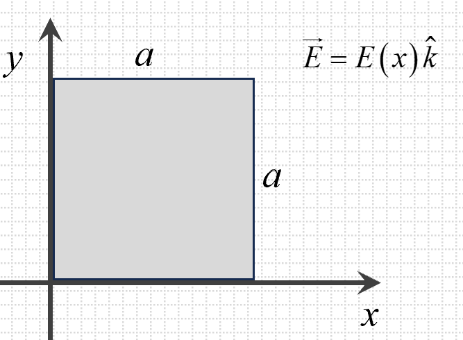
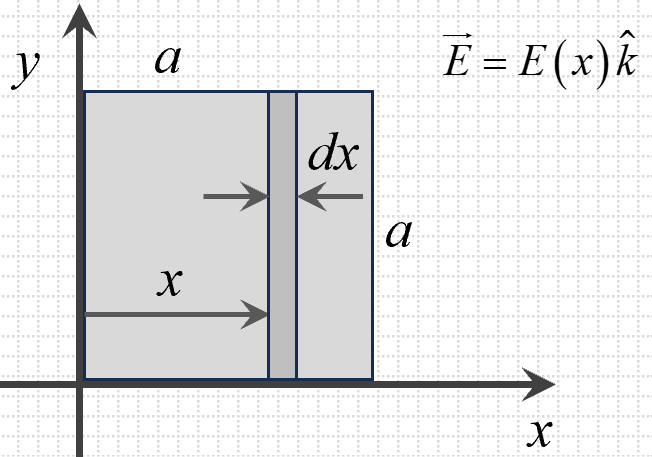

In physics, the area of a surface is often regarded as a vector quantity. For a
small, flat surface \(S\), its area vector is defined as the vector perpendicular
(normal) to the surface, having a magnitude equal to the area of \(S\). By this
convention, all area vectors for closed surfaces (such as those on spheres or
cuboids) point outward, consistent with outward-facing normals.
The 3D diagrams below help visualize this concept: each face or patch of a shape has
an area vector that points away from the enclosed region.
\(\vec{ds}\)
Area Vector for a Single Surface
\(\vec{A_1}\)
\(\vec{A_2}\)
\(\vec{A_3}\)
\(\vec{A_4}\)
\(\vec{A_5}\)
\(\vec{A_6}\)
Area Vectors for Different Surfaces of an Object
Diagram: Area Vectors of Various Surfaces
Just like any other vector, area vectors can be broken down into components. If the
area vector for a surface is \(\vec{A}\), it can be written as:
Here, \(A_x\) is the portion of the area vector pointing along the \(x\)-axis (i.e.,
corresponding to the surface's projection in the \(y\)-\(z\) plane), \(A_y\) along
the \(y\)-axis (projection in the \(x\)-\(z\) plane), and \(A_z\) along the
\(z\)-axis (projection in the \(x\)-\(y\) plane). The diagram below illustrates the
decomposition of an area vector into these components.
\(x\)
\(y\)
\(z\)
\(\vec{A}\)
Components of an Area Vector
To see how these components can be computed, imagine a rectangular surface of length
\(l\) and breadth \(b\) that is inclined at some angle \(\theta\) from the
horizontal. If you look at this rectangular patch from different views, you can
identify the horizontal and vertical components of its area by projecting the
surface onto those planes.
Components of an Inclined Surface Area
The area of the inclined surface in the diagram above is \( l \times b \). This
surface is inclined at an angle \(\theta\) with respect to the horizontal plane. As
a result, the projection of the inclined surface onto the horizontal plane forms an
area of \( l b \cos\theta \), while the projection onto the vertical plane forms an
area of \( l b \sin\theta \). This approach is consistent with the method of
resolving any vector, such as force or displacement, into two perpendicular
components.
These ideas extend naturally to curved surfaces. For a curved surface, the total
area vector \(\vec{S}\) is the sum (or integral) of all the infinitesimal area
vectors \(d\vec{S}\). Each \(d\vec{S}\) corresponds to a small
patch on the curved surface, oriented perpendicularly outward. By integrating over
the entire surface—like a spherical cap—the contributions from these small patches
combine to form one resultant area vector. In the diagram below, many small arrows
represent these elemental area vectors, and the large arrow stands for their overall
sum \(\vec{S}\).
\(\vec{ds}\)
\(\vec{S}\)
Elemental area vectors of a curved surface.
Notice that if the shape is symmetric about a vertical axis (like a dome), the
vertical components of the infinitesimal area vectors add up along that axis.
Consequently, when calculating the total, you can consider only the projections of
these small patches onto the horizontal plane. Each patch's vertical component
(\(d\vec{S}_\text{vertical}\)) sums to give the resultant \(\vec{S}\). The
following figure illustrates a single patch's vertical component:
Component of curved surface element.
In essence, the total area vector of a curved surface can be obtained by summing all
these projected (vertical) components. If you project that curved surface onto the
horizontal plane, you get a shape whose area vector matches the net result of the
curved surface itself. The figure below highlights this idea, showing that for two
surfaces sharing the same boundary—one curved and one flat—the final area vectors
are identical.
\(\vec{S}\)
\(\vec{S}\)
Same area vector for same boundary.
Therefore:
For two different surfaces sharing the same boundary, the net area vector has the
same magnitude. The directions may be same or just opposite, depending upon
considered face.
This is shown in following animation, where the two surfaces (the curved surface and
a flat surface) have congruent boundaries and hence have the same area vectors:
Animation: Same area vector for same boundary.
For any closed surface, there are no boundaries, or we consider the boundary to have
zero circumference. As a result,
The total area vector for any closed surface is always zero.
Solid angles are the three-dimensional equivalents of the familiar two-dimensional
angles that measure how wide something appears in a plane. In 2D, an arc subtends an
angle at the center of a circle, while in 3D, the base of a cone subtends a solid
angle at its apex. The following 3D model illustrates this concept:
To understand solid angles, let's begin with the idea of plane angles in two
dimensions. In 2D geometry, a plane angle \( \alpha \) is defined by the ratio of a
circle's arc length to its radius:
The standard unit for plane angles is the radian (\(\mathrm{rad}\)), with one full
revolution around a circle measuring \( 2\pi \, \mathrm{rad} \). Extending this
concept to three dimensions gives us solid angles. A solid angle \( \Omega \) is
defined as the ratio of an area on a sphere to the square of its radius:
\(\qquad
\Omega = \dfrac{\text{area on the sphere}}{\text{(radius)}^2}=\dfrac{{\Delta
A}}{{r}^2}
\)[For solid angle]
When the radius of the sphere is set to 1 (a unit sphere), \( \Omega \) is simply
the
area an object projects onto that sphere. The standard unit for solid angles is the
steradian (\(\mathrm{sr}\)).
To visualize solid angles, imagine a sphere of radius 1 centered at a point \( O \).
Any object or surface around \( O \) casts a “shadow” on the surface of this
unit sphere. The area of this shadow corresponds to the solid angle subtended by the
object. Hence, we define the solid angle as:
Solid angle subtended by an object \(B\) at a point \(O\) is the projection of \(B\)
onto a spherical surface of unit radius centered at \(O\).
The 3D model below shows the solid angle \(\Omega\) subtended by a blackboard at a
point. The solid angle \(\Omega\) is the area of the shaded region on the sphere,
which is the blackboard's projection. We assume the sphere has a unit radius.
Likewise, the next model illustrates how different objects subtend varying solid
angles.
Solid angle \(\Omega\) of blackboard at a point.
Amount of solid angle of different objects as their projected area on unit
radius sphere.
In two dimensions, a full circle subtends \( 2\pi \, \mathrm{rad} \), while in three
dimensions, a full sphere subtends \( 4\pi \, \mathrm{sr} \).
For instance, if you stand on flat ground and look straight up, the hemisphere of
the
sky that you see is half of the sphere, which subtends a solid angle of \( 2\pi \,
\mathrm{sr} \). Also, the blanket of air around the Earth (the atmosphere) subtends
a solid angle of \( 4\pi \, \mathrm{sr} \) at center of Earth.
Below are several key properties of solid angles that are essential for
understanding Gauss's Law:
Same Solid Angle for Surfaces with the Same Boundary
If two surfaces (for example, \(S_1\) and \(S_2\)) share the same
boundary curve and are viewed from the same point \(P\), they subtend
the same solid angle. This is because both surfaces cast identical
"shadows" on a unit radius spherical surface centered at \(P\).
Dependence on Observation Point
The solid angle subtended by an object depends on the position of the
observation point relative to the object. Moving the observation point
closer to the object increases the solid angle, while moving it farther
away decreases the solid angle.
Surface orientation
For a small elemental surface \(\vec{ds}\) at position vector
\(\vec{r}\), to find
solid angle subtended by it we must calculate the component of
\(\vec{ds}\) in the direction of \(\vec{r}\). If this component is
\(ds_r\), then the solid angle subtended by \(\vec{ds}\) at origin is:
\(\qquad d\Omega=\dfrac{ds_r}{r^2}\)
The component \(ds_r\) is equal to \(ds\cos\theta\). The component of
\(\vec{ds}\) in the direction of \(\vec{r}\) is shown
in following 3D model:
Taking component of \(\vec{ds}\) to find solid angle at apex of
cone (origin).
Solid Angle of a Cone
For a cone with a semi-apex angle \(\theta\), the solid angle \(\Omega\)
subtended by the base of the cone at its apex is:
\(\qquad
\Omega = 2\pi (1 - \cos \theta)
\)
Although this formula might seem complex at first glance, it offers
several intuitive insights:
Pointed Cone (\(\theta = 0\)): When the semi-apex
angle approaches zero, the base of the cone becomes a single point.
Substituting \(\theta = 0\) into the formula yields \(\Omega = 0\),
indicating no solid angle is subtended.
Hemisphere (\(\theta = \frac{\pi}{2}\)): When the
semi-apex angle is \(90^\circ\), the cone covers a hemisphere.
Plugging \(\theta = \frac{\pi}{2}\) into the formula gives \(\Omega
= 2\pi \, \mathrm{sr}\), which is half of the total solid angle of a
sphere.
Full Sphere (\(\theta = \pi\)): When the semi-apex
angle is \(180^\circ\), the cone encompasses an entire sphere.
Substituting \(\theta = \pi\) results in \(\Omega = 4\pi \,
\mathrm{sr}\), representing the total solid angle around a point.
Electric flux measures the quantity of the electric field passing through a given
surface. It quantifies how the electric field interacts with the surface and is a
fundamental concept in understanding electric fields and their effects on various
surfaces.
For an infinitesimal surface \( d\vec{S} \) in an electric field \( \vec{E} \), the
electric flux \( d\phi \) is given by:
\(\qquad d\phi = \vec{E} \cdot d\vec{S} \)
Here, \( d\vec{S} \) is a vector whose magnitude equals the infinitesimal area and
whose direction is perpendicular to the surface, pointing outward. The dot product
accounts for the angle between the electric field and the surface normal. The
elctric flux can be positive, negative or zero and has an SI unit of
\(\text{Nm}^2/\text{C}\) or \(\text{V}\text{m}\).
To calculate the electric flux through a significant sized surface, we perform
integration:
The following illustrative examples are designed to help understand the concept
of electric flux in different scenarios:
Flat Surface and a Uniform Electric Field
Consider a flat rectangular surface with an area vector \( \vec{S} =
3\hat{i} + 4\hat{j} \, \mathrm{m}^2 \), placed in a uniform
electric field \( \vec{E} = 5\hat{i} + 2\hat{j} \, \mathrm{N/C}
\). The electric flux through this surface is given by:
Thus, the flux through the flat surface is \( 23 \, \mathrm{V m}
\).
Curved Surface and Uniform Electric Field
Consider a hemispherical dome with radius \( R = 2 \, \mathrm{m} \),
placed in a uniform electric field \( \vec{E} = 10\hat{k} \,
\mathrm{N/C} \). To find the electric flux through this surface:
\(\qquad \phi = \vec{E} \cdot \vec{S} \) [Since given
electric field is constant]
The area vector of the curved surface can be treated as
its projection onto a plane perpendicular to \( \vec{E} \).
The projected area is a circle of radius \( R \), so its area is:
Hence, the flux through the curved surface is \( 40\pi \, \mathrm{V
\cdot m} \).
Non-Uniform Electric Field
Consider a square surface lying in the \( xy \)-plane, with one
vertex at the origin \((0, 0, 0)\) and the sides of length \( a = 2
\, \mathrm{m} \). The surface is oriented perpendicular to the \( z
\)-axis, and the area vector is \( \vec{S} = S \, \hat{k} \). Assume
a non-uniform electric field given by \( \vec{E}(x, z) = E(x)\hat{k}
\), where \( E(x) = 5x \, \mathrm{N/C} \). The setup is illustrated
in the following diagram (a).

(a) Electric flux due to non-uniform electric field.

(b) Elemental area \(adx\) for flux \(d\phi\) calculation.
To calculate the electric flux through this surface, we break it
into thin vertical strips of thickness \( dx \), extending
along the \( y \)-direction. Each strip has an area element \(
d\vec{S} = dx \cdot a \, \hat{k} \), where \( a = 2 \, \mathrm{m} \) is
the length of the strip. This is shown in diagram (b) above.
The total flux is then obtained by integrating the electric field
over the entire surface:
Consider a cubical surface with edge length \( a \), aligned with the
coordinate axes, such that one face lies between \( x = a \) and \( x =
2a \), while the cube spans from \( y = 0 \) to \( y = a \) and \( z = 0
\) to \( z = a \). The electric field in this region is given as \(
\vec{E} = \alpha x \hat{i} \), where \( \alpha \) is a constant.
To find the total flux through the cubical surface, we compute the flux
through each face of the cube separately. Assume the following labeling
for the faces:
Face 1: \( x = a \), outward normal is \( -\hat{i} \).
Face 2: \( x = 2a \), outward normal is \( \hat{i} \).
Face 3: \( y = 0 \), outward normal is \( -\hat{j} \).
Face 4: \( y = a \), outward normal is \( \hat{j} \).
Face 5: \( z = 0 \), outward normal is \( -\hat{k} \).
Face 6: \( z = a \), outward normal is \( \hat{k} \).
**Step 1: Flux Through Face 1 (\( x = a \))**
The electric field on this face is \( \vec{E} = \alpha a \hat{i} \), and
the area vector is \( \mathrm{d}\vec{S} = -\hat{i} \, \mathrm{d}y \,
\mathrm{d}z \). The flux is:
\(\Rightarrow \Phi_1 = \alpha a \int_{0}^{a} \int_{0}^{a} \mathrm{d}y \,
\mathrm{d}z = \alpha a \cdot a^2 = \alpha a^3\).
**Step 2: Flux Through Face 2 (\( x = 2a \))**
The electric field here is \( \vec{E} = \alpha (2a) \hat{i} \), and the
area vector is \( \mathrm{d}\vec{S} = \hat{i} \, \mathrm{d}y \,
\mathrm{d}z \). The flux is:
\(\Rightarrow \Phi_2 = (2\alpha a) \int_{0}^{a} \int_{0}^{a} \mathrm{d}y
\, \mathrm{d}z = 2\alpha a \cdot a^2 = 2\alpha a^3\).
**Step 3: Flux Through Other Faces**
For faces 3, 4, 5, and 6, the electric field is either perpendicular to
the area vector or zero. Hence, the flux through these faces is zero:
\(\Phi_3 = \Phi_4 = \Phi_5 = \Phi_6 = 0\).
**Total Flux Through the Cube:**
The total flux is the sum of the fluxes through all six faces:
Flux Through a Spherical Surface With Charge at
Center
Consider a spherical surface of radius \( R \) centered around a point
charge \( q \). The electric field due to the charge is radially outward
and given by:
where \( \hat{r} \) is the unit vector in the radial direction. The area
vector for the spherical surface is \( \mathrm{d}\vec{S} = R^2
\sin\theta \, \mathrm{d}\theta \, \mathrm{d}\phi \, \hat{r} \).
In the above part (b) of 3D models, a set of small surfaces are considered. For
different positions of small area \(\vec{ds}\) the flux is different. It can be
observed that:
when the electric field lines are entering the Gaussian surface,
\(\vec{E}\) makes obtuse angle with \(\vec{ds}\). So,
\(\qquad d\phi<0\)
when the electric field lines are exiting the Gaussian surface,
\(\vec{E}\) makes acute angle with \(\vec{ds}\). So,
\(\qquad d\phi>0\)
when the electric field lines are just tangential to the surface,
\(\vec{E}\) makes right angle with \(\vec{ds}\). So,
\(\qquad d\phi=0\)
Thus the flux gives an idea of how much electric field lines are exiting from a
closed surface. Entry of the electric field lines leads to negative and
tangential electric field lines lead to zero flux at those spots.
Also it is intuitive that:
if no net charge is present within the closed surface, all electric field
lines that enter the Gaussian surface (causing negative flux) should also
come out of the Gaussian surface (causing positive flux). So, the total flux
through the Gaussian surface will
become zero:
\(\qquad \Phi_\text{Total}=0\)
if net positive charge is present within the closed surface, more electric
field
lines should be coming out of the Gaussian surface. So, the total flux will
become positive:
\(\qquad \Phi_\text{Total}>0\)
if net negative charge is present within the closed surface, more electric
field
lines should be entering into the Gaussian surface. So, the total flux will
become negative:
\(\qquad \Phi_\text{Total}<0\)
With the above understanding of total flux through a closed surface (Gaussian
surface), let us first understand Gauss's law intuitively. Once we grasp the essence
of this law, we will explore how it can be derived formally using fundamental
concepts of area vectors and solid angles, providing both logical reasoning and
mathematical clarity. The law states:
"The total electric flux through a closed surface is equal to
\(\frac{1}{\epsilon_0}\) times the net charge enclosed within the surface."
Mathematically, for a closed surface \( S \), if the electric field at various
points on the surface is
given by \( \vec{E} \), the net flux \( \Phi_E \) through the surface is expressed
as:
Here, \( Q_\text{enclosed} \) represents the total charge enclosed within the closed
surface.
Gauss's law holds true for any closed surface, regardless of its shape, size, or how
the charge is
distributed inside it. Its practical utility arises in problems where it simplifies
the calculation of
electric fields by using the enclosed charge.
Below are some key concepts and implications of Gauss's law:
The electric field \( \vec{E} \) is the resultant
field
The \( \vec{E} \) in Gauss's law represents the total electric field at
each point on the
surface, regardless of the source of the field. This includes
contributions from all charges
inside and outside the closed surface.
For example, if there are external charges outside the closed surface,
they contribute to the
electric field at points on the surface but do not affect \(
Q_\text{enclosed} \). The law
accounts only for the net charge inside the surface.
\( Q_\text{enclosed} \) accounts for charges inside the
surface
The \( Q_\text{enclosed} \) term in Gauss's law includes only the
charges that are physically
enclosed within the closed surface \( S \). Charges outside the surface,
no matter how strong
their fields are, do not contribute to \( Q_\text{enclosed} \) but may
influence the electric
field \( \vec{E} \) on the surface.
For instance, in a spherical Gaussian surface enclosing a point charge
\( q \), the
\( Q_\text{enclosed} = q \), irrespective of the presence of other
charges outside the sphere.
Electric flux depends on the net charge, not its
distribution
Gauss's law reveals that the electric flux through a closed surface
depends only on the net
charge enclosed, not on how the charge is distributed within the
surface. For example,
whether a charge \( q \) is concentrated at a point or spread uniformly
inside the surface,
the total flux remains the same.
Shape and size of the closed surface do not matter
The electric flux through a closed surface depends only on the net
charge enclosed, not on
the shape or size of the surface. For instance, a spherical surface, a
cubical surface, or an
irregularly shaped surface enclosing the same charge will all yield the
same total flux.
Electric flux through closed surfaces with no
charge
If a closed surface encloses no net charge (\( Q_\text{enclosed} = 0
\)), the total electric
flux through the surface is zero. This does not mean the electric field
\( \vec{E} \) is zero
everywhere on the surface. It only implies that the field lines entering
the surface equal
those exiting it, resulting in no net flux.
This Gauss's law has many applications in finding the electric field in symmetrical
charge distribution and understanding a few properties of conductors. Before
entering into such applications, lets first discuss the general proof of Gauss's
law.
Generalised proof of Gauss's law
Consider a small surface area \(\vec{ds}\) at a position \(\vec{r}\) from a
charge \(q\). The flux through this surface is given as:
Here, \(\hat{r}\) represents the unit vector along the direction of \(\vec{r}\).
The variables are shown in the following 3D model:
\(ds_r\) as component of \(\vec{ds}\)
Since the term \(\hat{r}\cdot\vec{ds}\) represents the component of \(\vec{ds}\)
in the direction of \(\vec{r}\), the elemental flux \(\d\phi\) simplifies to:
The total flux of a charge \(q\) through a closed surface enclosing it is
\(\dfrac{q}{\epsilon_0}\).
Generalization to Multiple Charges
If instead of a single charge, we enclose several charges \( q_1, q_2, \ldots,
q_n \) within the same closed surface, each charge contributes its own flux
according to the result we derived for a single charge. Because the electric
field follows the principle of superposition, the total electric flux is simply
the sum of the individual fluxes due to each enclosed charge:
Here, \( Q_{\text{enclosed}} = q_1 + q_2 + \cdots + q_n \) is the total charge
inside the surface. Thus, no matter how many charges are present or how
they are arranged, the net flux through any closed surface depends
only on the sum of those charges. This confirms the general
applicability of Gauss's law: the flux through a closed surface is
entirely determined by the total enclosed charge.
Through a closed surface, we can calculate the electric flux directly by using the
Gauss's law. But for an open surface we generally use either the symmtry principles or
solid angle concept to find the net electric flux. This is illustrated below:
Using symmetry: through a hemisphere
Consider a charge \( q \) placed at the center of a hemisphere of
radius
\( R \).
The electric field lines emerging from the charge are radially
outward
and
uniformly distributed in all directions. On the curved surface of
the
hemisphere,
these lines intersect the surface perpendicularly (due to symmetry),
leading to a
straightforward flux calculation.
If the entire sphere of radius \( R \) were
considered instead of
just the hemisphere, we know from Gauss's law that the total flux
through the
sphere is:
Because a hemisphere is exactly half of a closed sphere (by surface
area
and by
symmetry around the center), the flux through its curved surface
alone
will be
half of the flux through the full sphere:
Now consider a charge \( q \) placed a perpendicular distance \( l/2
\)
from
the center of a square surface of side length \( l \). Directly
calculating
the flux through this single square can be challenging because the
electric
field is not uniform over the surface.
We can embed this square as one face of a cube
of
side \( l \). And hence, construct 5 more similar square sheets around
the charge making a cube with charge present at the body center. This is
shown in following 3D model:
Consider a point charge \( q \) placed at a distance \( x \) along the
axis from the center of a disc of radius \( R \). The total electric
flux emanating from the charge
\( q \) is uniformly spread over all solid angles surrounding the
charge. To find the flux through the disc, we calculate the fraction of
the total solid angle subtended by the disc at the charge's position.
The total flux \( \Phi_\text{total} \) from the charge in complete solid
angle of \(4\pi\) around it, is:
The disc subtends a solid angle at the
charge's position. To determine this, consider the cone formed
by the charge as apex and the disc as base. The semi-apex angle of this
cone is:
If a given charge distribution is symmetric, then Gauss's law can be used to find
the electric field at a general point. Here symmetry may be of following types:
Spherical: Like a point charge or uniformly spread charge on a
sphere.
Cylindrical: Like a line charge or uniformly spread charge on a
cylinder.
Planer: Like a large uniformly charged plane sheet.
We discuss the methods of calculations of electric field in following categories:
Spherical symmetric charge distribution
Consider a spherically symmetric total charge \(Q\) distributed in a
region around the origin of co-ordinates. Let the charge distribution be
limited within a distance \(R\) from the origin. We will use the
techniques of Gauss's law and symmetry to find the electric field at
any general position \(r\) from the origin.
For outside the charge distribution \(\left(r>R\right)\)
To find the electric field at a point \(P\) at a distance \(r\)
from the origin, we consider a Gaussian surface (a closed surface)
in the shape of a sphere centered at the origin. Using symmetry we
can conclude that:
DIagram here
[a-charge, point P and GAussian surface]
[b- electric field lines on the surface (not too dense)]
The electric field is radially outwards at all points of
the Gaussian surface.
The magnitudes of electric field are equal at all points of
the Gaussian surface.
Since the electric field \(\vec{E}\) at every point on the Gaussian
surface points radially outward, the angle between \(\vec{E}\) and
\(d\vec{A}\) is zero.
\(\Rightarrow\quad E \times (4 \pi r^2)=
\frac{Q_{\text{enc}}}{\epsilon_0}\)
Since \(r > R\), the enclosed charge \(Q_{\text{enc}}\) is the
total charge \(Q\) (the entire distribution). Therefore,
\(
E = \frac{Q}{4\pi \epsilon_0 r^2}.
\)
This shows that outside the spherically symmetric charge
distribution, the electric field is the same as if all the charge
were concentrated at the center (like a point charge).
For inside the charge distribution \(\left(r <
R\right)\)
We again choose a Gaussian surface, which is a sphere of radius \(r\lt R
\). All previously mentioned results of symmetry are still the same.
Since the electric field is radially outward and has the
same magnitude \( E \) on the Gaussian surface,
\(\qquad
E \times (4\pi r^2) = \frac{Q_{\text{enc}}}{\epsilon_0}.
\)
\(\Rightarrow\quad
E = \frac{Q_{\text{enc}}}{4\pi \epsilon_0 \, r^2}.
\)
Here \( Q_{\text{enc}} \) is the charge enclosed by the
sphere of radius \( r \).
So, under a special condition of finding electric field inside a
uniformly charged hollow sphere of radius \(R\), the charge enclosed
inside a spherical Gaussian surface of radius \(r\)(\(r\lt R\)) is zero.
Therefore, inside a unifromly charged hollow sphere, electric field is
zero everywhere.
Assuming uniform charge per unit volume \(\rho\) for the charged
region,
If the total charge \( Q \) is uniformly distributed within
the sphere of radius \( R \),
the charge density \(\rho\) is constant:
\(\qquad\rho = \frac{Q}{\text{Volume of the sphere}} =
\frac{Q}{\tfrac{4}{3}\pi R^3}\)
\(\qquad E=\frac{Q
\,\tfrac{r^3}{R^3}}{4\pi
\epsilon_0 \, r^2}=\dfrac{Q}{4\pi \epsilon_0 R^3}\, r. \)
This
shows
that inside a uniformly charged solid
sphere, the electric field
increases linearly with \( r \).
Summary of results
Distribution
Electric Field \(E\)
Inside hollow Spherical Shell (radius = R)
\(E = 0\)
Outside hollow Spherical Shell (radius = R)
\(\displaystyle E = \frac{Q}{4\pi \epsilon_0 \,
r^2}\)
Outside uniform Solid Sphere (radius = R)
\(\displaystyle E = \frac{Q}{4\pi \epsilon_0
R^3}\, r\)
Inside uniform Solid Sphere (radius = R)
\(\displaystyle E = \frac{Q}{4\pi \epsilon_0 \,
r^2}\)
Cylindrical symmetric charge distribution
Now let us consider a cylindrically symmetric charge
distribution of
radius \(R\). We use the same Gauss's law approach, but our Gaussian
surface will
be a cylinder (coaxial with the charged cylinder) instead of a sphere.
For outside the charge distribution \(\left(r >
R\right)\)
Consider an infinitely long cylinder of radius \(R\) with uniform volume
charge per unit axial length \(\lambda\). Let us find the electric field
at a point at
distance \(r\) \((r > R)\) from the axis of the cylinder.
We take as a Gaussian surface a coaxial cylinder of length \(L\) and
radius \(r\).
By symmetry:
DIAGRAM Here
[a- line charge, cylinder (each face named), point P]
[b- electric field lines]
The electric field \(\vec{E}\) at every point of the curved surface
of
the Gaussian cylinder is radially outward (perpendicular to the
axis).
The magnitude \(\,E\,\) is constant at all points on that curved
surface.
No flux passes through the flat circular ends (top and bottom)
because
\(\vec{E}\) is parallel to those end surfaces.
\(\displaystyle E \times (2 \pi r \, L) =
\frac{Q_{\text{enc}}}{\epsilon_0}\)
Since \(r > R\), the enclosed charge is the charge within radius \(R\):
\(\quad Q_{\text{enc}} = \lambda \, L\)
Therefore,
\(\displaystyle E \, (2 \pi r L) = \frac{\lambda L}{\epsilon_0}
\)
\(\displaystyle
E = \frac{\lambda \, }{2\pi \epsilon_0 \, r}
\)
For inside the charge distribution \(\left(r <
R\right)\)
For a hollow cylindrical shell (an infinitely
long thin cylindrical shell of radius \(R\)
carrying uniform surface charge density \(\sigma\)), there is no
charge enclosed
for \(r \lt R\). Thus, \(E=0\) for \(r\lt R\).
For a point inside a uniformly charged solid cylinder, we again
use a coaxial cylindrical Gaussian surface of radius \(r \gt
R\)
and length \(L\). Considering charge per unit volume present in
the
cylindrical region as \(\rho\), the enclosed charge is that of a
smaller cylinder of radius \(r\): \(\quad Q_{\text{enc}}=\rho
\,\pi
r^2 L\).
Hence, by Gauss's law:
\(\displaystyle E \times (2 \pi r \, L) = \frac{\rho \,\pi r^2
L}{\epsilon_0}
\;\;\Longrightarrow\;\;
E = \frac{\rho\,r}{2 \epsilon_0}.
\)
Thus, inside a uniformly charged cylinder, the electric field
increases linearly with \(r\).
Summary of Cylindrical
Results
Distribution (Infinite Length)
Electric Field \(E\)
Inside hollow Cylindrical Shell
\(\displaystyle E = 0\)
Outside hollow Cylindrical Shell
\(\displaystyle E = \frac{\lambda}{2 \pi
\epsilon_0 \, r}\)
Inside uniform Solid Cylinder
\(\displaystyle E = \frac{\rho\,r}{2
\,\epsilon_0}\)
Outside uniform Solid Cylinder
\(\displaystyle E = \frac{\lambda}{2 \pi
\epsilon_0 \, r}\)
Planar symmetric charge distribution
Now let us consider an infinitely large plane with
uniform charge
density. We use a cylinder-shaped Gaussian surface that straddles the
plane (its flat
faces parallel to the charged plane). By symmetry:
The electric field \(\vec{E}\) is perpendicular to the plane and has
the same magnitude
on both sides.
The flux through the curved surface of the cylinder is zero because
\(\vec{E}\) is parallel to that surface.
Let the surface charge density be \(\sigma\). Then the charge enclosed
by the cylinder
is \(\sigma \times (\text{area of cylinder face})\). Applying Gauss's
law:
\(\displaystyle E = \frac{\sigma}{2\,\epsilon_0}.
\)
Therefore, the magnitude of the electric field due to a single infinite
charged plane
(with surface charge density \(\sigma\)) is
\(\displaystyle \frac{\sigma}{2\epsilon_0}\), directed normally away
from the plane.